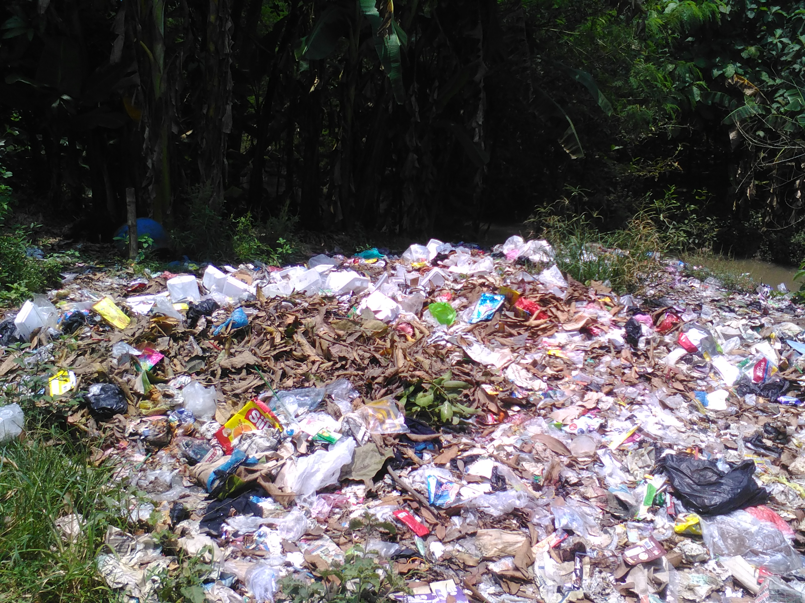

Penerapan 5R

Prinsip dasar dari kegiatan ini adalah memanfaatkan kembali barang bekas dengan cara mengolah materialnya, seperti mengolah sampah organik menjadi pupuk atau mengolah sampah plastik menjadi berbagai macam kerajinan yang memiliki nilai ekonomi.
Kedua adalah Reuse, menggunakan kembali material atau bahan yang masih layak dipakai. Contohnya adalah dengan memanfaatkan kantong plastik yang sudah tidak dipakai dengan menyimpanya agar nanti bisa dipakai kembali.
Selanjutnya Reduce, pengurangan atau mengurangi pemakaian suatu material tertentu yang dianggap dapat mengurangi produksi sampah.
Kita bisa mengurangi produksi sampah dengan menggunakan barang-barang yang tahan lama, seperti peralatan yang awet dan dapat digunakan berkali-kali. Hal ini akan membantu mengurangi konsumsi bahan-bahan yang diambil dari alam dan akan membantu lingkungan untuk kembali semimbang.
Replace, mengganti barang tertentu dengan alternatif barang lain yang dapat memberikan manfaat yang sama. Sebagai contoh, jika terbiasa menggunakan tas plastik dari supermarket apabila sedang berbelanja, anda bisa mulai menggunakan kantoing plastik bekas yang ada di rumah dari pada harus menggunakan kantong plastik dari supermarket.
Yang paling penting dari penerapan konsep 5R adalah replant. Replant adalah penanaman kembali tumbuhan hijau agar tercipta ekosistem baru yang akan menciptakan keseimbangan alam yang lebih baik. Kegiatan ini akan memberi pengaruh yang sangat baik apabila dikerjakan oleh banyak orang. Karenanya, untuk melakukan replant lebih sering selenggarakan karena menanam pohon akan jauh menciptakan kesimbangan alam yang lebih baik.
Keuntungan yang bisa kita dapat dari pemanfaatan 5R secara tepat adalah kita dapat hidup di lingkungan yang seimbang.
Kita bisa menjadikan 5R sebagai senjata utama kita dalam mengatasi kerusakan lingkungan yang diakibatkan oleh ulah kita sendiri. Karenanya, tidak ada kata terlambat untuk memulai menerapkan 5R.
Share


Ikuti Kami